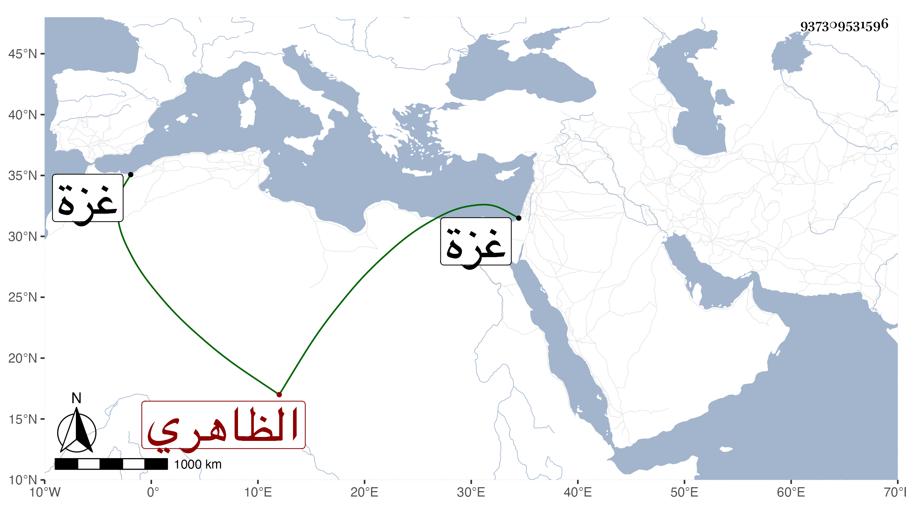

0902Sakhawi.DawLamic.ITO20230111-ara1.EIS1600.937309531596
Biography ID: 937309531596
56
طيفور الظاهري برقوق ، ويقال انه كان يقال له أيضا بيخجا ولكن طيفور الأغلب وليس هو بطيفور العواد . ترقى في أيام أستاذه حتى صار أميرآخور ثاني ثم نائب غزة ثم نقل بعد مدة إلى حجوبية دمشق الكبرى ثم كان بعد موت أستاذه ممن وافق نائبها تنم الحسني على العصيان وممن قتل بقلعتها في منتصف شعبان سنة اثنتين عن نيف وثلاثين وكان تركي الجنس حسن القامة مليح الصورة متصلفا مسيكا مائلا إلى اللهو والطرب .
